Our work
Whatever we’re making, we’re driven by strategic insights, creative inspiration and a steely focus on audience experience.
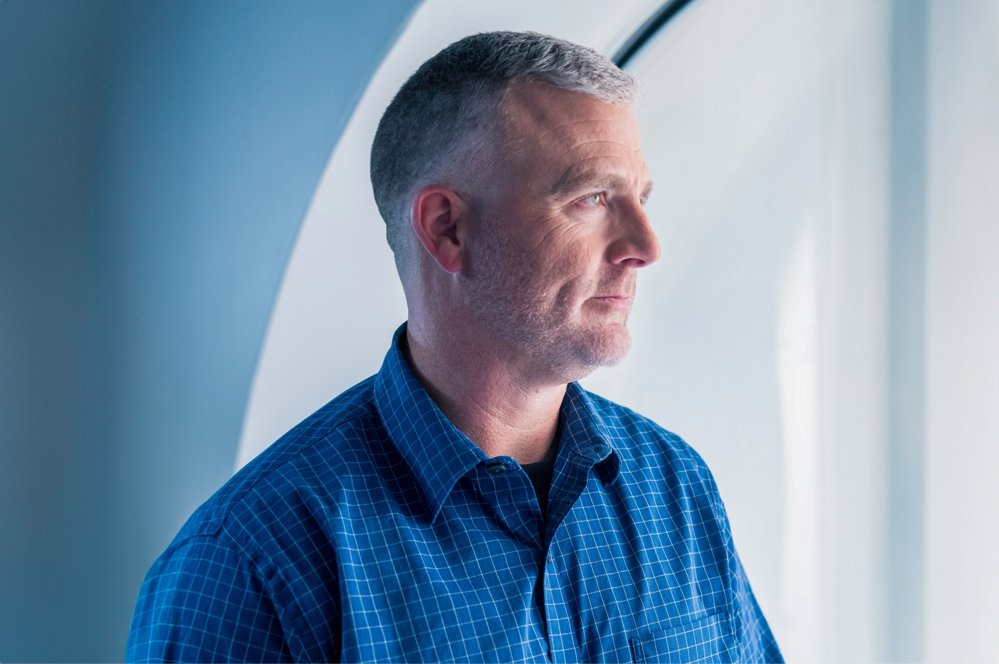
UST
A human connection
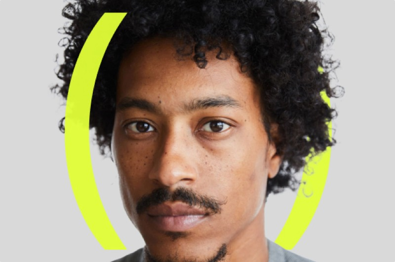
Inception
Unlocking invention through authenticity
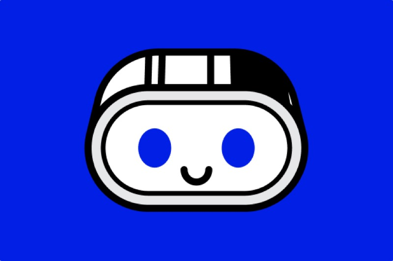
botim
Making money move through play
G42
Creating the blueprint for intelligent storytelling
Responsible AI Future Foundation
Building a brand that advocates for balance
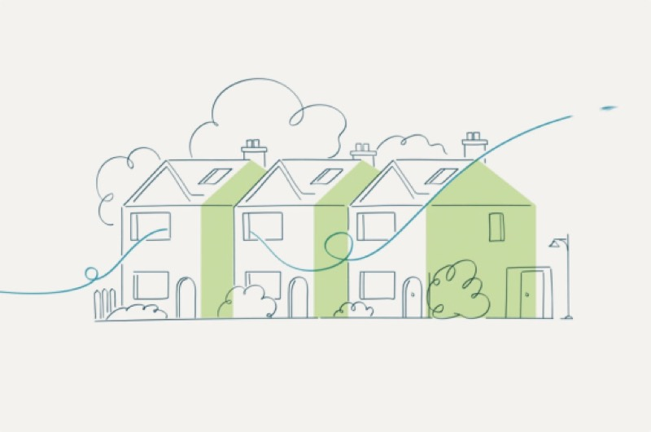
Wates
Building a brand with care, legacy and leadership
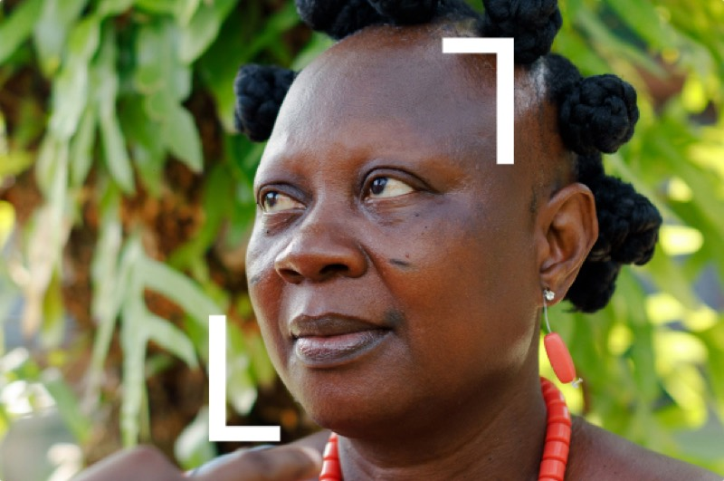
Level
Shaping a global brand that balances climate and community
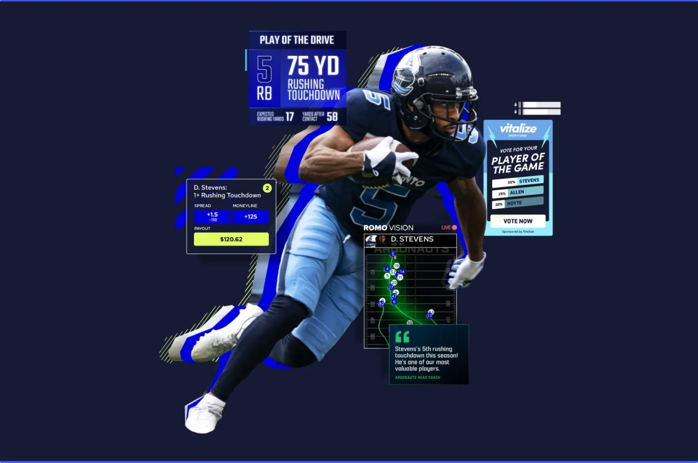
Genius Sports
A brand campaign for a new world of sport
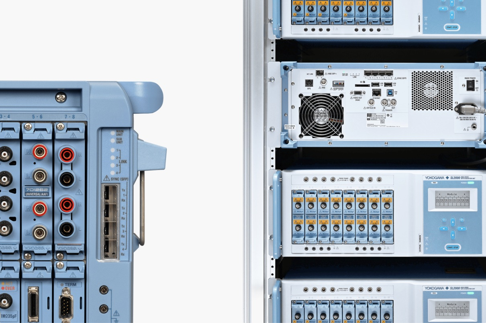
Yokogawa
Elevating sustainability – precisely
Teledyne Healthcare
Bringing multiple brands under one roof
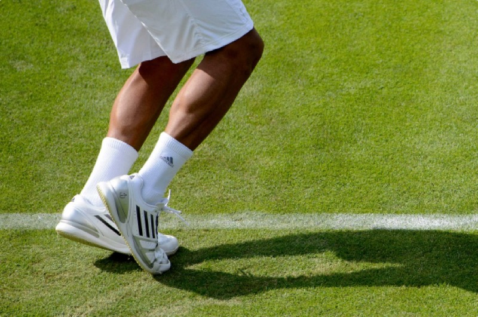
IBM x Wimbledon
Two iconic brands. Three decades.
Toshiba
Togetherness
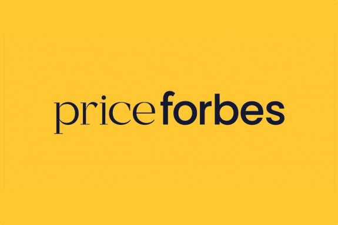
Price Forbes
A fresh take on heritage.
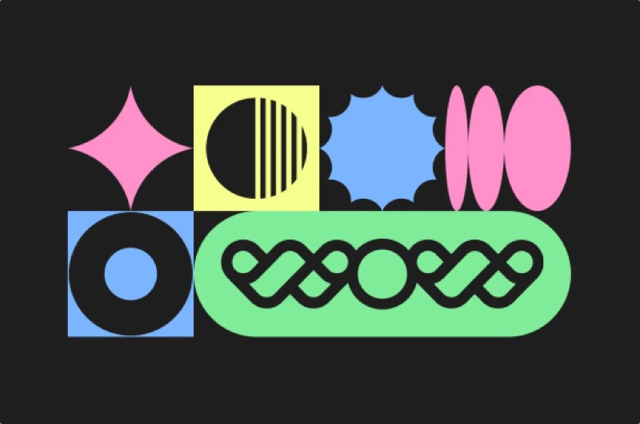
WellSaid
Shaping a leader in AI voice
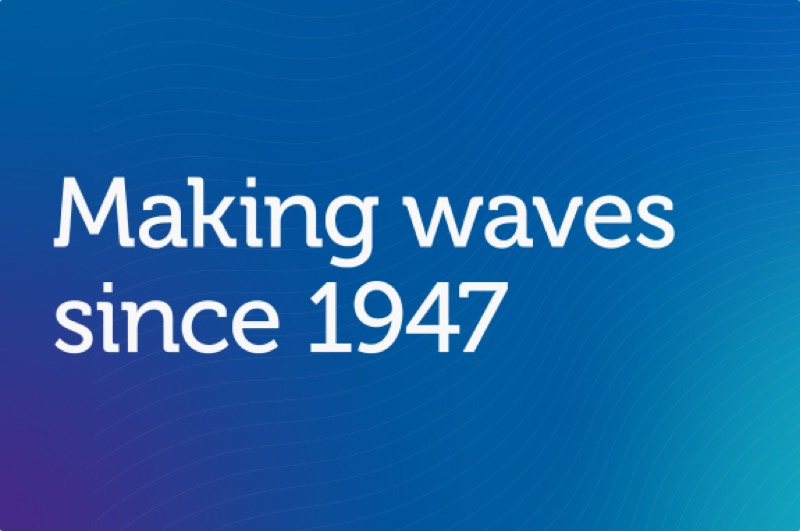
Teledyne
How cancer-fighting technology inspired a dynamic brand
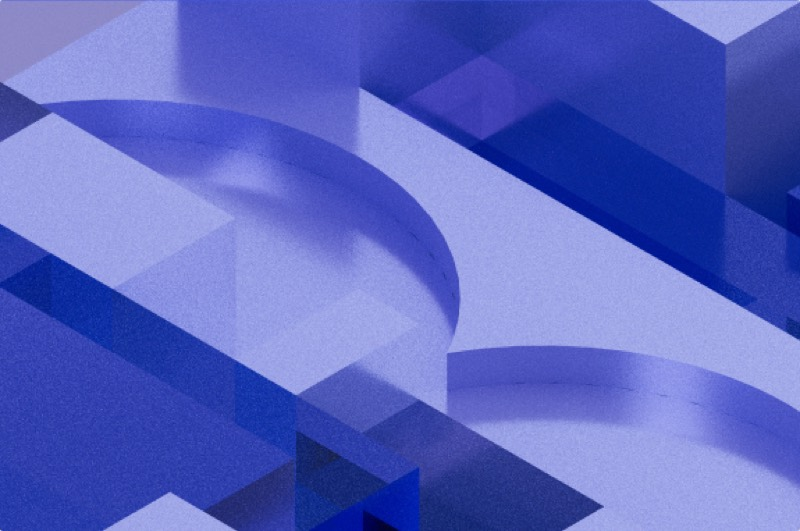
IBM
This is IBM
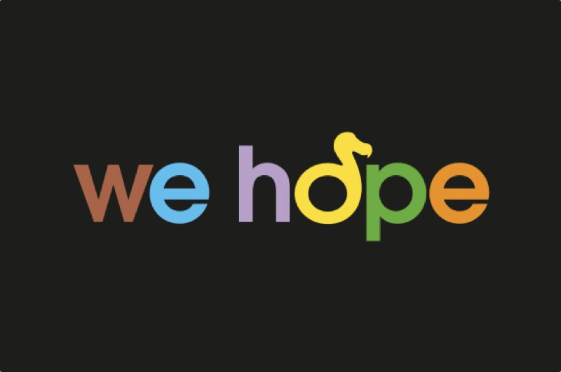
Durrell
The lonely Dodo